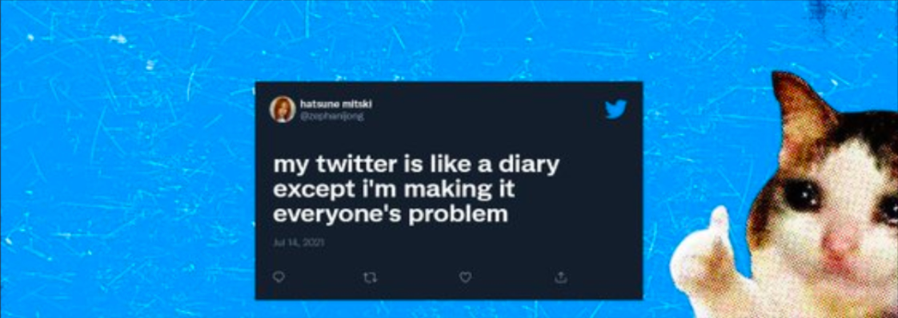

話題を検索

設定

Twitter
1.4万 件のツイート

Twitter
@Twitter
what's happening?!
enerywhere
about.twitter.com

誕生日: 3月21日

2007年2月からTwitterを利用しています
1フォロー中
6,067.6万フォロワー
@Twetter・1月1日

こんにちは


1万
9万
@Twetter・1月13日
2 Retweets, that's a hit
5.1万
3.7万
@Twetter・1月10日
may your Tweets prosper and you never be ratioed
1.1万
12.7万

Twitterを使ってみよう
今すぐ登録して,タイムラインをカスタマイズしましょ
う。
By signing up, you agree to the Terms of Service and
Privacy Policy, including Cookie Use.
おすすめツイート
Google

@Google
Microsoft
@Microsoft